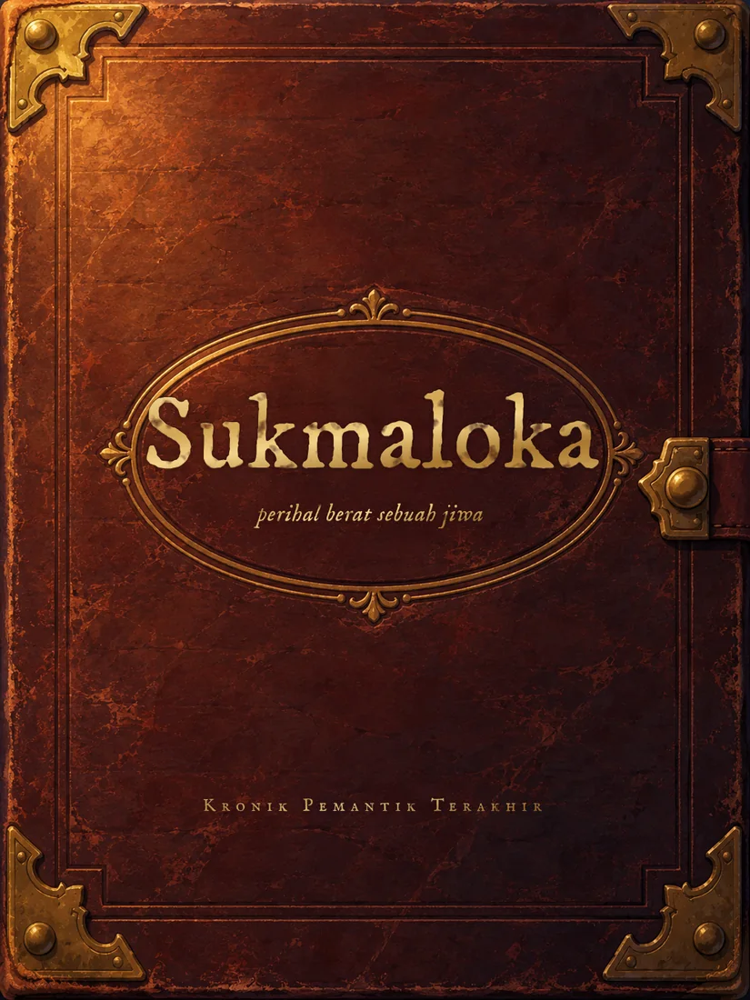
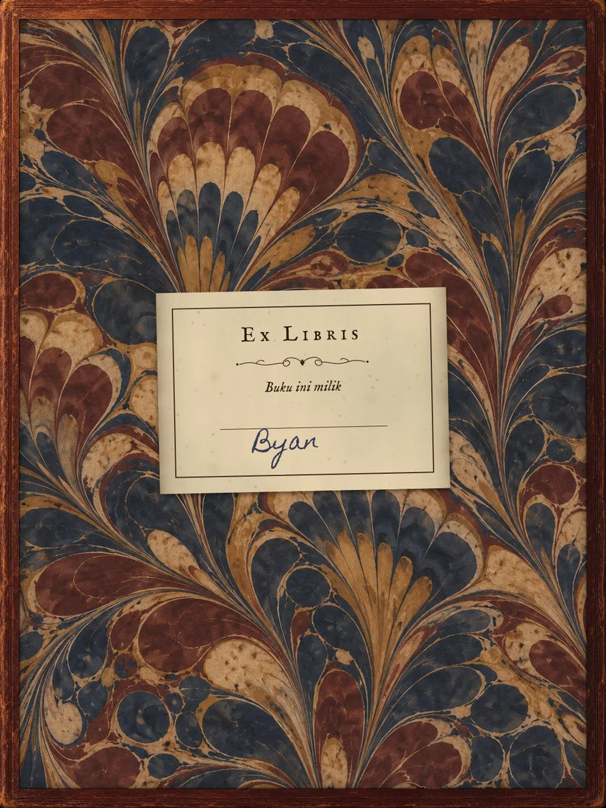
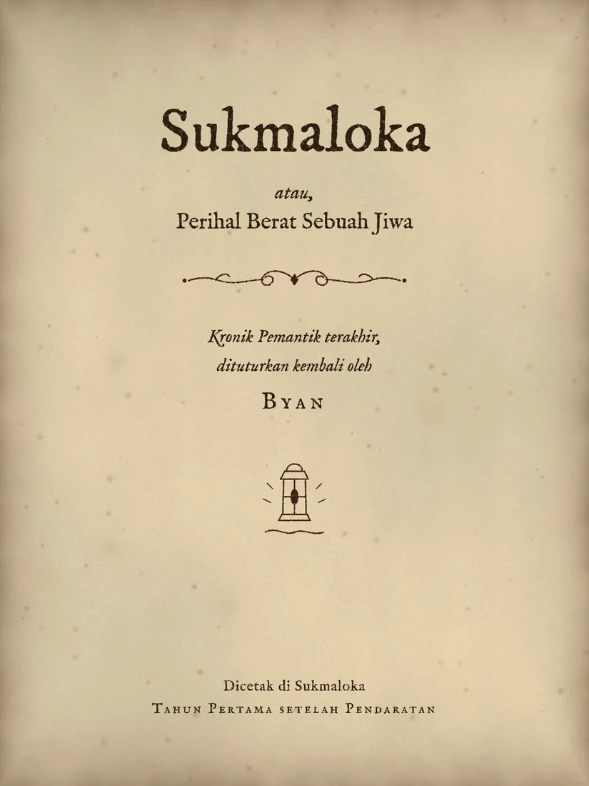
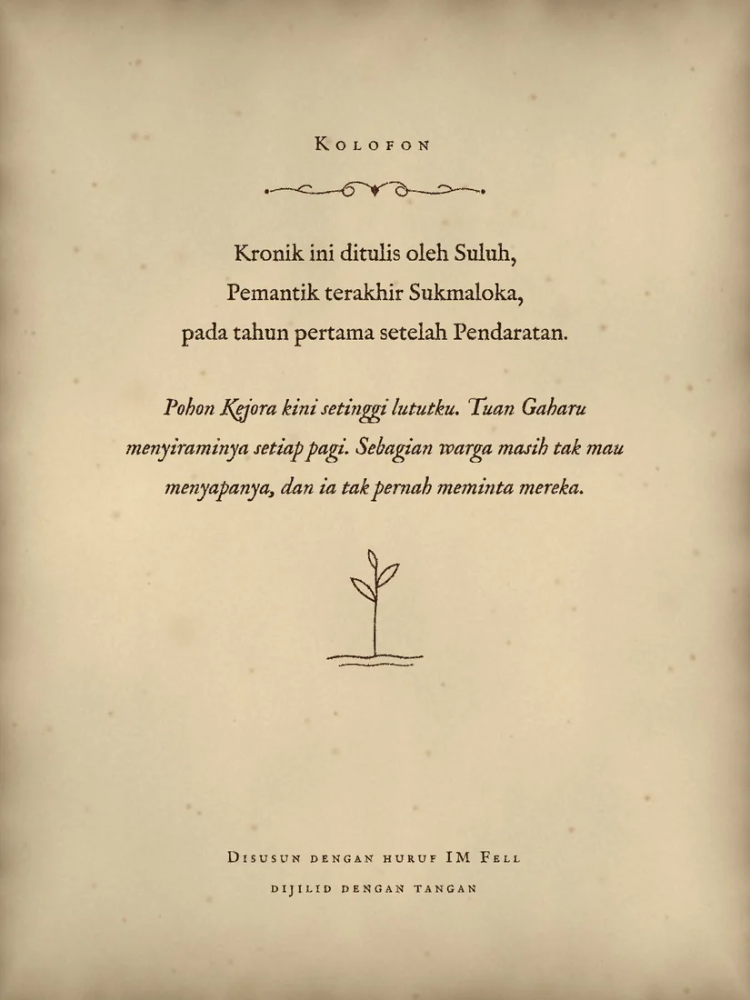
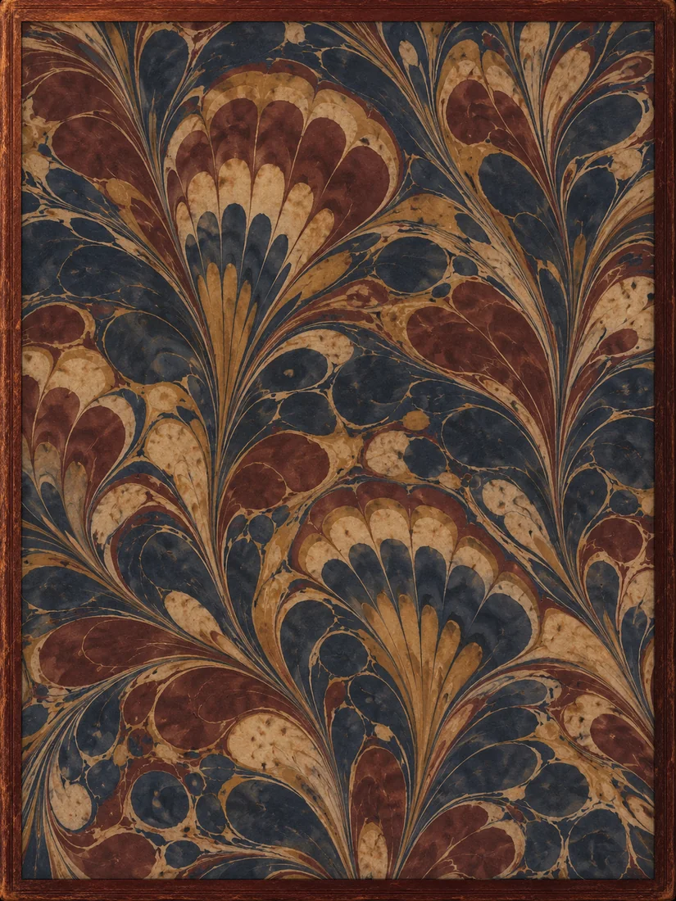
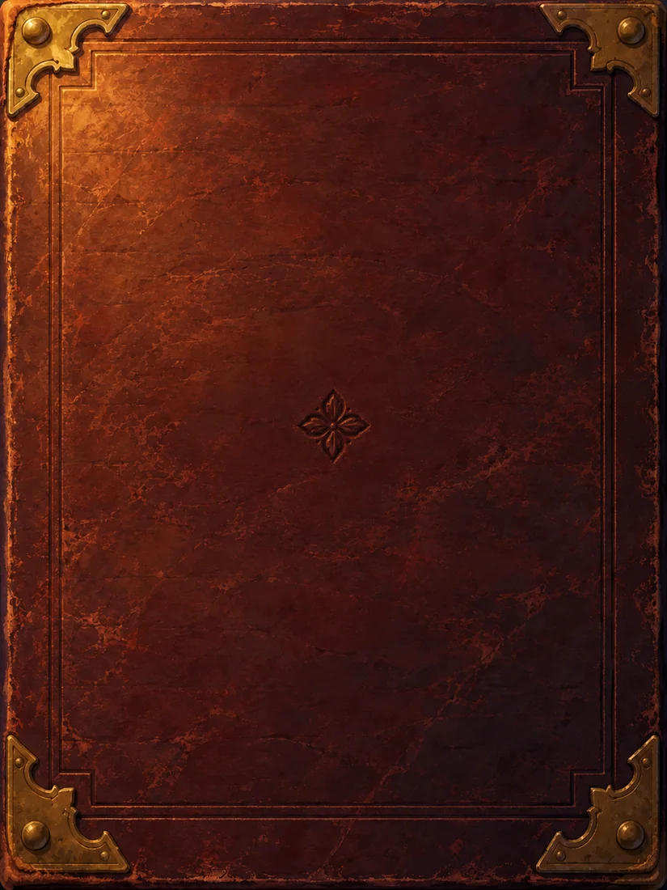

Di Sukmaloka, kota yang melayang di atas lautan awan, senja tiba lebih dulu di atap-atap tertinggi. Di sanalah Suluh dan Kejora duduk setiap sore, di antara cerobong yang masih hangat.
Mereka punya satu aturan. Siapa yang pertama melihat bintang senja harus mengatakan satu hal yang jujur. Kejora selalu menang. Ia selalu menengadah, sementara Suluh sibuk menghitung lampu jalan yang belum dinyalakan.
Guru Suluh, Tuan Gaharu, Kepala Serikat Pemantik, suatu sore ikut duduk bersama mereka. “Itu juga bintang fajar,” katanya, menunjuk bintang yang sama. “Ia terbit saat senja dan saat fajar. Satu bintang, dua nama.”
Kejora tertawa sampai batuk. “Mana mungkin satu bintang ada di dua tempat?”
Gaharu hanya tersenyum. “Tunggu sampai kau cukup jauh untuk melihatnya.”
Ayah Kejora, Pak Nadi, membuat jam untuk seluruh kota. Kejora membuat hal-hal yang tidak diminta siapa pun.
Suatu malam ia menyerahkan sebuah kompas kuningan seukuran kancing. “Tiup kacanya,” katanya. Suluh meniupnya. Kejora meniup kompas kembarannya sendiri, dan kedua jarum langsung berbalik, saling menunjuk.
Untuk membuktikannya, Kejora menaruh kompasnya di laci, lalu berlari mengelilingi atap. Jarum di tangan Suluh tidak menunjuk ke laci. Jarum itu mengikuti Kejora.
“Kompasnya cuma kuningan,” kata Kejora, terengah. “Yang ditunjuk itu napasnya. Ke mana pun aku pergi, jarummu akan menemukanku.”
Malam itu mereka menyepakati sandi. Tiga kedipan lentera dari atap ke atap artinya aku di sini. Dua kedipan artinya pulanglah. Mereka tidak pernah membuat sandi untuk selamat tinggal. Kata Kejora, sandi itu tak akan pernah dipakai.
Di Sukmaloka, kematian datang dengan langkah yang sopan. Begitu seseorang berpulang, Serikat Pemantik mengetuk pintu membawa lentera perak yang tutupnya terkunci.
Suluh pernah ikut, sebagai murid yang memegang tangga. Ia melihat Tuan Gaharu berlutut di samping tempat tidur dan membisikkan doa yang sama untuk setiap orang: “Ringanlah, dan naiklah.”
Lentera perak itu datang dalam keadaan gelap. Saat dibawa pulang ke menara, ia menyala.
“Kenapa cahayanya ikut mereka?” tanya Kejora malam itu di atap. “Bukannya seharusnya ikut orang yang meninggal?”
Suluh tak tahu jawabannya. Ia hanya tahu larangan pertama yang diajarkan kepada setiap murid: jangan pernah membuka tutup lentera perak.
Di Sukmaloka tak ada yang menengok ke bawah. Di bawah awan, kata para guru, hanya ada air hitam yang dulu menenggelamkan dunia lama.
Kejora tetap menengok. Selama tiga bulan ia menyambung kawat jam bekas ayahnya, gulung demi gulung, sampai cukup panjang untuk menjulur dari ujung dermaga. Sambil menunggu, ia mencatat garis awan di tiang dermaga setiap minggu. Tak ada yang pernah memintanya.
Mereka menurunkan toples berpemberat saat semua orang tidur. Kawat itu turun dan terus turun, lalu berhenti, seperti menyentuh sesuatu.
Toples itu naik kembali basah dan hangat. Di dalamnya ada segenggam tanah hitam dan sebutir biji.
“Bisa saja itu biji tua,” kata Suluh. “Dari tiga ratus tahun lalu.”
“Bisa saja,” kata Kejora. Ia menanamnya di pot berisi jelaga. Biji itu tak pernah tumbuh.
Musim dingin membawa jelaga turun ke lorong-lorong. Anak-anak cerobong mulai batuk, seperti setiap tahun, dan seperti setiap tahun, sebagian dari mereka tak sampai ke musim semi.
Kejora batuk paling keras. Untuk pertama kalinya ia kalah menemukan bintang.
“Hal yang jujur,” katanya pelan. “Aku takut. Tapi aku juga penasaran.”
Ia meminta ayahnya memasang ranjangnya di atas timbangan besar dari bengkel, dan setiap malam ia mencatat beratnya sendiri. “Kalau jiwa itu ada,” katanya, “timbangan ini akan tahu.”
Lalu ia meletakkan biji itu di telapak tangan Suluh dan menutup jari-jarinya.
“Kalau aku pergi lebih dulu, jangan biarkan mereka memasukkanku ke lentera. Aku mau turun. Aku mau melihat apa yang tumbuh di bawah sana.”
Suluh berjanji, padahal ia belum mengerti apa yang sedang ia janjikan.
Kejora pergi pada suatu senja, tepat saat bintang pertama muncul. Tak ada yang melihatnya duluan.
Pak Nadi duduk di samping ranjang sepanjang sore, menatap jarum timbangan karena tak sanggup menatap anaknya. Karena itu ia melihatnya: tepat saat napas terakhir Kejora keluar, jarum itu bergeser ke kiri. Sedikit sekali. Selebar rambut.
Ia mencatatnya di buku Kejora, di bawah tulisan tangan anaknya sendiri, dengan tangan yang gemetar. Dua puluh satu gram.
Di atas dada Kejora, setitik cahaya menggantung. Tidak naik, tidak turun, seperti menunggu fajar. Suluh menatapnya, lalu menatap jendela. Satu dorongan saja, dan ia bisa menepati janjinya.
Ketukan sopan terdengar di pintu sebelum ia sempat bergerak. Tuan Gaharu masuk membawa lentera perak yang gelap.
“Minggir, Nak,” kata gurunya lembut. Suluh minggir.
Lentera itu keluar dari rumah dalam keadaan menyala.
Mereka memakamkan Kejora di taman batu di pinggir kota. Suluh membuka kompasnya, berharap jarumnya menunjuk ke makam.
Jarum itu menunjuk ke atas.
Ia berjalan ke kiri, lalu ke kanan, lalu mengelilingi taman. Jarum itu tetap menunjuk ke satu arah: kubah Menara Lentera Agung, yang selalu menyala dan tak pernah padam.
Malam itu Pak Nadi menyerahkan buku catatan anaknya kepada Suluh. Di halaman-halaman terakhir ada catatan garis awan. Naik setiap tahun, tulis Kejora. Satu jengkal, lalu dua, lalu tiga. Makin cepat. Kota ini sedang tenggelam, dan tak ada yang mau mengukurnya. Di bawahnya, tulisan tangan Pak Nadi: dua puluh satu gram.
Suluh mengambil kunci menara dari kait di dinding gurunya.
Menara itu lebih tinggi dari dalam ketimbang dari luar. Suluh menaiki tangga melingkar melewati roda gigi sebesar rumah, sampai tiba di ruangan yang dindingnya penuh buku besar.
Ia membuka satu secara acak. Nama, tanggal, nomor sel, dua puluh satu gram. Nama berikutnya, tanggal berikutnya, dua puluh satu gram. Tiga ratus tahun.
Di buku paling awal, para pendiri kota menulis dengan tenang. Jiwa itu ringan, dan karena ringan, jiwa selalu naik. Satu jiwa tak berarti apa-apa. Kumpulkan cukup banyak di satu tempat, dan kau bisa mengangkat sebuah kota keluar dari air.
Di rak paling bawah ada buku lain: catatan garis awan milik Serikat sendiri. Angkanya sama dengan angka Kejora. Mereka sudah tahu, sejak lama.
Suluh akhirnya mengerti asal nama Sukmaloka, dunia para jiwa. Para pendiri kota hanya menulis apa adanya.
Kubah di puncak menara adalah sarang lebah dari kaca: ribuan sel kecil, masing-masing berpelat nama, masing-masing berisi satu cahaya. Sebagian terang. Sebagian tinggal bara. Sebagian begitu redup sampai Suluh harus menyipitkan mata.
Kompasnya bergetar, lalu menunjuk ke satu sel di dekat lantai. Pelatnya masih baru.
Suluh mengangkat lenteranya dan mengedipkannya tiga kali. Aku di sini.
Lama sekali tak ada yang terjadi. Lalu cahaya di dalam sel itu berkedip. Satu. Dua. Tiga.
Suluh menempelkan telapak tangannya ke kaca yang dingin. Ia tidak menangis waktu pemakaman. Ia menangis sekarang.
“Kau tidak seharusnya di sini.” Tuan Gaharu berdiri di ambang pintu, tanpa marah, hanya lelah.
Ia tidak menyangkal apa pun. Jiwa-jiwa di kubah itu tidak beristirahat; mereka habis terbakar menjadi daya angkat kota. Setiap tahun ada yang padam, dan setiap tahun kota butuh yang baru. Itu sebabnya obat untuk batuk jelaga tak pernah dicari.
“Kejora,” kata Suluh.
“Ada sepuluh ribu orang di bawah kita,” kata Gaharu. “Kalau cahaya ini berhenti, mereka semua jatuh ke air hitam. Aku memilih sepuluh ribu itu, setiap tahun, selama tiga puluh tahun. Kau pikir aku tidur nyenyak?”
Ia mengambil kunci dari tangan muridnya dan mengantarnya turun, tanpa kekerasan. Di pintu menara, Suluh menyodorkan satu hal terakhir: buku catatan Kejora.
“Ukur sendiri,” katanya.
Gaharu membaca buku itu sampai lewat tengah malam, berdampingan dengan arsip garis awan milik Serikat. Lalu ia turun ke dermaga sendirian, membawa lentera, dan berdiri di depan tiang yang sudah ia lewati setiap hari selama tiga puluh tahun tanpa sekali pun menunduk.
Ia mencari takik yang ia ukir sendiri saat masih murid. Takik itu sudah tenggelam di bawah kabut. Jarak antartakik sesudahnya makin lebar dari tahun ke tahun, persis seperti dalam angka Kejora. Kota ini tidak turun pelan-pelan. Kota ini turun makin cepat.
Pengorbanan yang ia jaga tidak menyelamatkan kota. Pengorbanan itu hanya membeli waktu, dan setiap tahun waktunya makin mahal.
Menjelang subuh ia naik ke kubah, ke sel yang ia kunjungi setiap malam sejak istrinya, Wangi, meninggal. Cahaya di dalamnya tinggal setitik, nyaris tak lagi berdenyut.
Selama dua puluh tahun ia percaya sedang menjaganya. Malam ini, dengan angka-angka itu di tangannya, ia tak bisa lagi berpura-pura.
Pagi harinya, ia mengetuk pintu bengkel jam dan menyerahkan kunci perak kepada muridnya. “Bantu aku menurunkan kota ini,” katanya, “selagi masih ada cukup cahaya untuk turun pelan-pelan.”
Malam itu, untuk pertama kalinya dalam tiga ratus tahun, pintu menara dibuka untuk siapa saja. Warga kota menaiki tangga melingkar dan berdiri di depan dinding sel kaca, membaca pelat-pelat nama. Seorang lelaki tua menemukan ibunya. Seorang ibu menemukan anak laki-lakinya, yang meninggal karena batuk musim dingin lalu.
Tidak semua ingin turun. Ada yang berteriak bahwa di bawah hanya ada kematian. Ada yang menuduh Gaharu gila. Ibu itu memeluk sel anaknya dan tidak mau melepaskannya.
Gaharu tidak memaksa. Ia membacakan angka-angka Kejora keras-keras: kota ini akan menyentuh awan juga, sepuluh tahun lagi, atau dua puluh. Pilihannya hanya turun sekarang selagi bisa dikendalikan, atau terus membayar dengan anak-anak mereka sampai cahayanya habis. Tak ada yang menjawab.
Lalu Suluh berjalan ke sel dengan pelat nama paling baru, dan memutar kunci perak. Cahaya Kejora keluar, berputar sekali di depan wajahnya, lalu naik.
Setelah itu tak ada lagi yang menunggu suara terbanyak. Tiap keluarga memutuskan untuk orangnya sendiri. Sel-sel tua yang tak punya keluarga lagi dibuka Gaharu satu per satu, pelan, supaya kota turun dan tidak jatuh. Sampai subuh, sebagian warga tetap menentang, dan sebagian sel tetap tertutup. Sel anak itu salah satunya.
Sukmaloka turun sepanjang hari.
Awan menelan atap-atap tertinggi lebih dulu, lalu cerobong, lalu jendela. Dunia jadi kelabu dan basah, tanpa atas dan tanpa bawah. Seseorang menangis, lalu seseorang bernyanyi, dan tangis itu berhenti.
Di kubah, ibu itu masih memeluk sel terakhir yang tertutup. Saat kabut masuk lewat celah kaca, ia membuka tutupnya sendiri.
Suluh berdiri di ujung dermaga dengan kompas di tangannya. Jarumnya berputar liar sejak ia memutar kunci itu, mencari dan terus mencari. Lalu berhenti, dan menunjuk lurus ke atas, menembus awan, ke tempat yang tak akan bisa ia jangkau lagi.
Dulu ia kehilangan Kejora karena tak sanggup berkata tidak. Kali ini ia melepaskannya dengan tangannya sendiri, dan rasanya jauh lebih berat.
Sukmaloka menyentuh tanah dengan bunyi yang pelan, seperti orang tua yang akhirnya duduk.
Masih gelap. Masih dingin. Tak ada yang tahu apakah tanah ini bisa ditanami, apakah airnya bisa diminum, apakah tiga ratus tahun cukup untuk menyembuhkan dunia lama.
Suluh berlutut di rumput basah dan menggali lubang kecil dengan jarinya. Saat itu langit timur memucat, dan satu bintang terang terbit mendahului matahari.
Jarum kompasnya bergeser pelan, lalu berhenti tepat di bintang itu.
“Satu bintang, dua nama,” bisik Suluh. Ia akhirnya cukup jauh untuk melihatnya.
Ia menanam biji itu.
Dua puluh satu gram. Cukup ringan untuk naik ke langit, cukup berat untuk menahan sebuah kota selama tiga ratus tahun.


